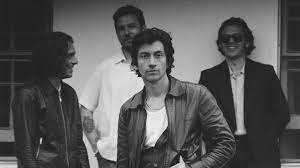
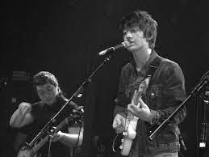
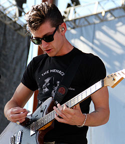
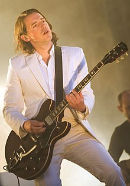
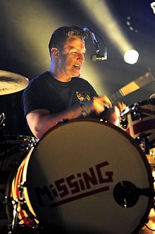
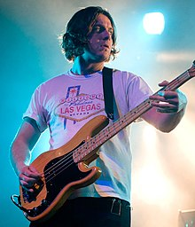

O nama
Nastanak grupe
Nakon odlaska na koncert Libertinesa, 2001. godine, susjedi Alex Turner i Jamie Cook zatrazili su da kao bozicni dar dobiju neki instrument i obojica su dobili gitaru. Nakon sto su naucili svirati, osnovali su sastav zajedno s Turnerovim skolskim prijateljima Andyjem Nicholsonom i Mattom Heldersom. Nicholson je vec znao svirati bas-gitaru, pa je Helders zavrsio na bubnjevima. Jedan clanak iz magazina Blender otkriva da Alex Turner nije bio originalni pjevac grupe. Ubrzo nakon ovog clanka izasao je detaljniji clanak u britanskom tabloidu The Sun koji govori da je u ranijim danim grupe - kada jos nisu nigdje nastupali - pjevac bio Glyn Jones jos jedan ucenik Stocksbridge High School. No on je odustao i na njegovo mjesto je dosao Alex Turner. Ubrzo su poceli vjezbati u Yellow Arch Studios u Neepsendu i imali su prvu gazu 13. lipnja 2003. u The Grapesu u sredistu Sheffielda. Nakon nekoliko nastupa, poceli su snimati svoje demosnimke, prziti ih na CDe i na svojim nastupima davati obozavateljma. Zbog malog broja CDa njihovi obozavatelji su ih poceli medusobno izmjenjivati. Arcticsima to ocito nije smetalo ...nikad nismo napravili te snimke da bismo zaradili novac ili nesto slicno. Ionako smo im te snimke dali besplatno - to je bio najbolji nacin da ih ljudi poslusaju. Zbog toga su nastupi bili bolji jer su ostali znali rijeci pjesama i pjevali su zajedno s nama. Oni osobno nisu preuzeli odgovornost za svoju glazbu, jer su priznali da nisu znali kako su se njihove pjesme nasle na Internetu.
 Video
Clanovi grupe
- Alex Turner-pjevac,gitarist i glavni tekstopisac
- Jamie Cook-gitarist
- Matt Helders-bubnjevi i prateci vokal
- Nick O'Malley-bas-gitara



